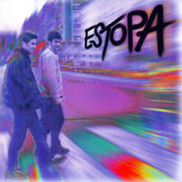

Estopa (banda)
 De: La Frikipedia, la enciclopedia extremadamente seria.
De: La Frikipedia, la enciclopedia extremadamente seria.
De la serie Grupos musicales:
David y José
apareándose posando para la foto
| Origen
|
En Aspaña, y no nos sentimos orgullosos
|
| Tiempo
|
El de las comercialadas
|
| Estilo
|
Rumba catalana, pero no en català
|
| Discográfica/s
|
La que más droga les pague
|
| Miembros
|
Yonki 1 y yonki 2
|
| Estado
|
En breve, con sobredosis
|
| Sitio web
|
|
Estopa son dos porretas catalanes nacidos en Cornellà de Llobregat que desde bien pequeños, cuando llegaba la hora del patio, se fumaban su cigarrillo (a veces algún porrillo que otro). David es el hermano mayor, el que manda y el que canta. A los 12 años empezó a trabajar en un fábrica de Seat pero lo echaron porque siempre iba fumado a trabajar, luego se enchufó en el bar con su tío pero su tío no paraba de putearlo y la única manera de irse era formar un dúo con su hermano en ese tiempo llamado eR Masilla unos de los mas peligrosos canis conocidos en Cornellà. David encerró a su hermano pequeño en un cuarto durante 4 años con una guitarra, cuando salió del cuarto eR Masilla sabía tocar la guitarra y respondía al nombre de José. Desde ese día 1 del 1 del 1995. Pero no tenían nombre, entonces David se asomo a la ventana y vio una señal de trafico stop. Fueron muy influenciados por el foyonero y amigos íntimos de Buenafuente.
 Estopa yendo al bar
Sin nombre Vida y (muchos) fracasos
La abuela de los hermanos Muñoz tenia un "periquito" que esta en busca y captura y su primera "canción" se la dedicaron al "periquito" para que volviera pero no volvió. Su madre les prestó un Ford Escort pero lo siniestraron y aun siguen en deuda con ella. Dicen que calle es suya, no saben hablar catalán y llevan toda su vida viviendo en Catalunya, son del Real Mandril, son fans de Los Chichos, de los calis y de el Vaquilla los que los convierte en unos Lolailos
Se comenta, que David Muñoz nació con perilla.
Discografía
Este grupo a tenido dos etapas: la etapa Lolaila y la etapa Comercial.
- Las Maquetas: de donde han sacado mas de la mitad de sus canciones. En una de ellas te amenazan con que estarán en sus próximos discos por que nos les dio tiempo.
- Estopa (1999): todas las canciones eran buenas (gustaban porque era la novedad, ya está).
- Destrangis (2001): casi todas las canciones eran buenas (les dieron otra oportunidad).
- Más destrangis (2002): ya cansan todo el rato con lo mismo.
- La calle es tuya? y Estopa bonus trak (2004): como no sabían que hacer pidieron consejo a su amigo Andreu Buenafuente que les compuso todas las canciones y por eso les dio tiempo a hacer dos discos, uno de ellos eran canciones antiguas pero en CD (porque se dejó de llevar la cinta).
- Voces de ultrarumba (2005): En este disco colaboro mucho El Sevilla y Camela.
- Allenrok (2008): El título es Kornella al revés. En este colaboró Melendi.
- Allenrok 2 (2010): No puedo dar más información.
- Estopa la película (2014): Esta película dramática tratara sobre dos jóvenes hermanos que se meten en el mundo de las drogas, la prostitución y en el mundo cani. ¿Qué fantásticas aventuras les sucederán a los jóvenes hermanos Muñoz?
- David Muñoz (2020): Este CD sera en solitario
Los fans de Estopa
- Chinos, Gitanos y Canis
- Andreu Buenafuente
- Cachuli
- Raúl
- Zapatero
- Tú
- Macaco
- David Villa
- Dross
- El rumano de la esquina (si, si, el de tu esquina)
- Mi ex novia
- Kevin Corner Penarti
- Un chino
- Buenafuente
- Corbacho
- Berto
- Tu madre y tu padre (si es que él lo es...)
- otro chino (es que son muchos)
- Brock
- Ash Mostaza
- Ricardo Oliveira
- Yo
Autor(es):
- Bladguer
- Harry El del Pote
- Mude-chan
- Anomino
- Trastito2es
- Genericool
- Pablo94
- Mariette
- Generibot
- Zeta
Frikipedia 2005-2016, Licencia
GFDL 1.2 - Extraído por FrikiLeaks